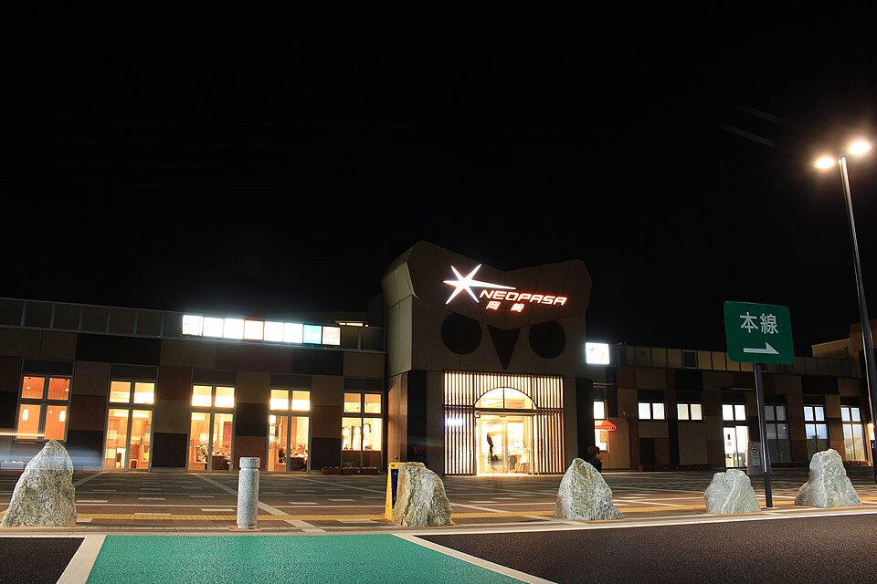
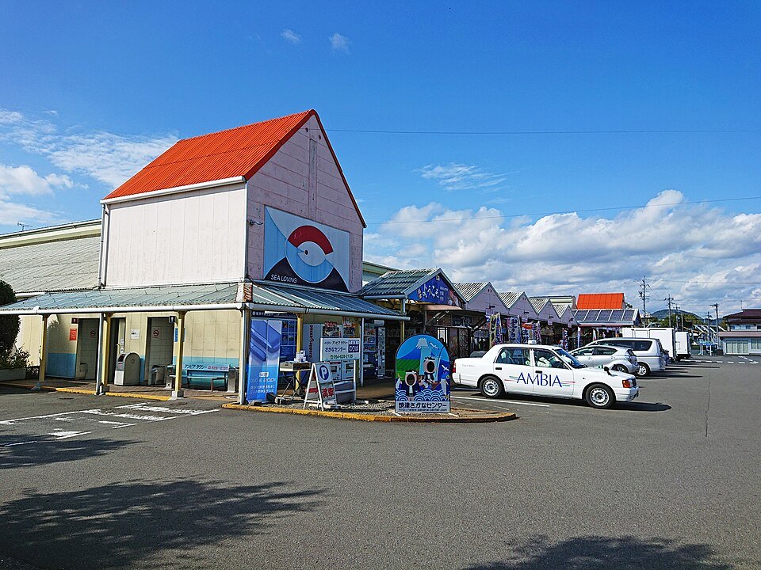

写真：Oka21000 / CC0 1.0（960px縮小・トリミング表示）

OSAKA → SHIZUOKA / FAMILY ROAD TRIP
浪速警察署から、名阪国道で焼津へ。
温泉も、車中仮眠も、遊びも、無理なく。
MY TRIP / 2026.10.13 調査
日付未定。夜出発・車中で運転休憩1回＋焼津のホテル1泊を基本案にしました。下の「ここに行く」で現地ナビを開けます。
ROAD ROUTE
浪速警察署 → 西名阪 → 名阪国道（無料区間） → 東名阪 → 伊勢湾岸道・刈谷PA → 豊田JCT → 東名高速 → 浜松西 / 掛川 / 焼津IC
刈谷で温泉、翌日浜名湖パルパル〈遊園地型〉または掛川花鳥園〈コスパ型〉を選ぶ。テーマパーク利用日は途中で高速を降りて再流入するため料金が変動します。
🗺 GoogleマップでルートAを見る刈谷 → 豊田東JCT → 新東名 → NEOPASA岡崎（上り） → NEOPASA浜松（上り） → 掛川PA（上り） → 藤枝岡部IC → 焼津
シャワーを使いやすい。東名の浜名湖パルパルへは戻らない。掛川花鳥園に行く場合は高速の降り口・再流入をナビで再検討。
新東名ルートの地図SLEEP & BATH

ITINERARY
例：1日目は掛川花鳥園を選ぶ。時刻はナビ未確定の仮置きです。
西名阪 → 名阪国道 → 東名阪。余裕を持ち、休憩を優先。
温泉かきつばたで家族入浴。遅れそうなら無理に飛ばさない。
休憩目的の短時間仮眠。4人が安全に横になれない車なら宿泊施設を使う。
東名高速へ。テーマパーク優先なら浜名湖方面、コスパ重視なら掛川へ。
雨天でも楽しい。鳥のショー時刻は当日公式確認。
少し遅めの昼食・土産探し。17時までに訪問。
家族4名1室か2室かを必ず確定予約。
プラネタリウム等。休館日ならターントクルこども館に変更。
混雑日・悪天候は早めに大阪へ戻る。
交通量・休憩によって大幅変動する目安。
SPECIAL FEATURE / ROAD TRIP PARKS
西名阪・名阪国道から焼津まで。刈谷PAより手前・先を分け、家族4人の料金・写真・アクセスで12施設を選べます。
🎡 道中テーマパーク特設おすすめ3選・12施設をコスパ★★★★★で比較・雨天対応特設ページを見る →
FAMILY EXPERIENCES
子どもが楽しめる順ではなく「移動のしやすさ・コスパ・雨天対応」で選んでいます。


HOTEL / ONE NIGHT
当日の宿泊料金・空室は未照会です。表示価格を現行最安値と誤解しないよう、予約前に「大人2人＋小学生2人」で総額比較してください。
ETC NIGHT DISCOUNT
西名阪・名阪国道経由の料金差を区間別に整理。通常と深夜、往路と復路を選んで節約額を計算できます。
🌙 深夜割引・料金比較の専用ページを見る →BUDGET PLANNER
ホテル代・高速・ガソリン・食費は見積り用の仮定であり、販売価格・料金照会結果ではありません。下のコースを切り替えると概算が変わります。
| 高速代（往復・一般的なETC利用を仮定） | 12,000〜18,000円（深夜割引前） |
|---|---|
| ガソリン代（車の燃費等で変動） | 9,000〜14,000円 |
| 焼津のホテル1泊（4名・場合により2室） | 12,000〜28,000円 |
| 外食・軽食（3日間） | 12,000〜20,000円 |
| 刈谷の温泉4人 | 2,840円 |
| テーマパーク・観光 | 6,000円 |
各施設の券種・日付によって変わる概算です。テーマパークの写真・比較は 12選の専用ページ。浜名湖パルパルは日付未定のため対象外です。
BUDGET RANGE / 概算合計
金額は目安。深夜割引はこの概算に含めていません。割引額は専用ページで別途比較してください。高速の途中出入り・曜日・ホテルプラン・食事・駐車料金により増減します。
BEFORE DEPARTURE
OFFICIAL SOURCES
最終調査：2026年10月13日。日時未決定のため空室・宿泊総額・高速料金の確定照会は未実施。
NEXCO中日本：SA・PAの入浴・コインシャワー一覧 ／ 天然温泉かきつばた ／ 浜名湖パルパル日別料金 ／ 掛川花鳥園 ／ ディスカバリーパーク焼津 ／ 焼津さかなセンター ／ nanvanの子連れ案内。
写真はWikimedia Commonsの利用条件確認済み素材を960pxに縮小して本サイト内に保存。著作者名・ライセンスを写真直下および画像出典ファイルに表示。権利が確認できない施設写真は掲載していません。